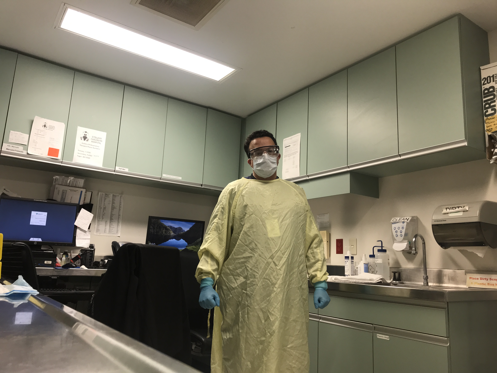
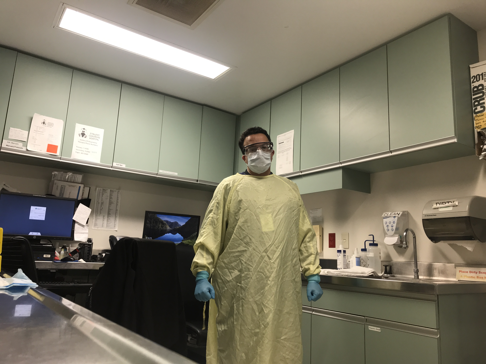

أفضل
مُحترف مختبرات طبية ذو خبرة واسعة، ماجد بدر، يمتلك خبرة واسعة في إدارة جميع المختبرات الطبية، مع التأكد من أن معايير المؤسسة تتوافق مع الامتثال القانوني وتوقعات العملاء.
اكتشف المزيد
+1 587-938-2425
 
